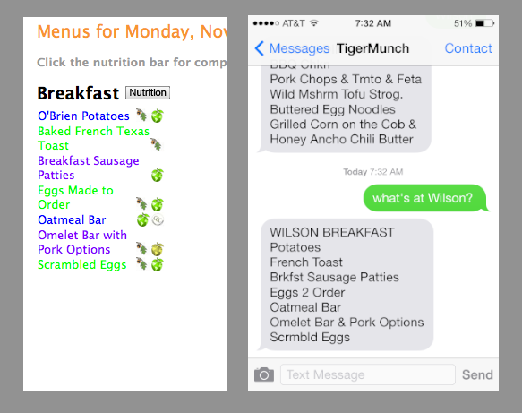

I wanted a fast way to check dining hall menus on the go!

With six dining options and what can often be a huge range in options, I, like other students, often found myself checking the menus online. The online interface, though, was a bit messy and mobile-unfriendly, especially when checking multiple menus.
TigerMunch streamlines that process -- simply send a text like "Wilson lunch" and get back a full menu for any meal for any dining hall!
Give it a spin! Text TigerMunch at (609)-752-3411 to try!
TigerMunch is built using a python script hosted on Heroku. Using Twilio integration, a number was set up which reads in an input and extracts key words (such as "wilson" or "lunch"), converting this to a request based on the closest match. If no meal is specified, the time of day is used to figure out the next meal. The meals are scraped from online and sent back to the user.
Check out the GitHub repository here.